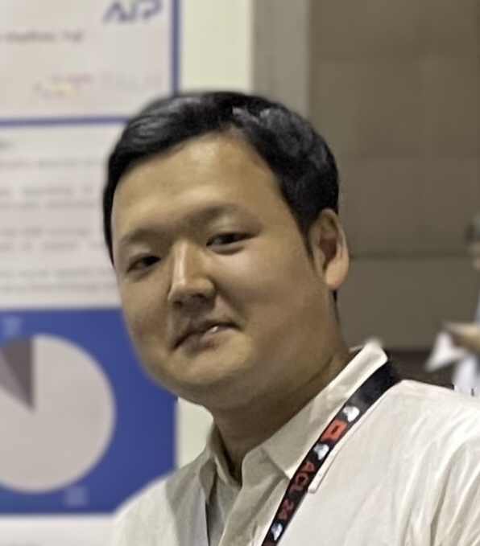

Noriki Nishida
Ph.D. of Information Science and Technology
Postdoctoral Researcher
RIKEN Center for Advanced Intelligence Project (AIP)
Nihonbashi 1-chome Mitsui Building 15F
1-4-1 Nihonbashi, Chuo-ku, Tokyo 103-0027, Japan
Email: noriki.nishida [at] riken.jp
Noriki Nishida is a postdoctoral researcher at RIKEN Center for Advanced Intelligence Project (AIP), Japan.
Previously, he receiced his Ph.D. degree in 2020 from The University of Tokyo.
His research is aimed at using computers to analyze natural language text, extract information from it, and support knowledge retrieval and discovery.
In particular, he is working on discourse analysis and knowledge acquisition from biomedical papers.
News
- Jun 2022: Our paper (Takeuchi@UTokyo, Nishida, Nakayama@Utokyo) titled "Neural Networks in a Product of Hyperbolic Spaces" has been accepted by NAACL-SRW 2022.
- May 2022: I will give an invited talk at the 2022 Annual Meeting of the Biometric Society of Japan.
- March 2022: Our paper (Kamezawa@UTokyo, Nishida, Shimizu@Yahoo, Miyazaki@Yahoo, and Nakayama@UTokyo) on automatic release note generation from commit messages and a new dataset (RNSum) has been accepted by ACL 2022. [paper]
- October 2021: Our paper (Nishida and Matsumoto) on unsupervised domain adaptation of discourse dependency parsing and COVID-19 Discourse Dependency Treebank (COVID19-DTB) has been accepted by TACL and will be presented at ACL 2022. [paper]
Research Areas
- natural language processing (NLP), biomedical NLP
- discourse analysis (e.g., discourse structure parsing, coherence modeling)
- knowledge acquisiton, information extraction
Work History
- April 2020 - Present: Postdoctoral Researcher, RIKEN AIP.
- April 2022 - Present: Part-Time Lecturer, University of Tsukuba.
- July 2020 - Jun 2021: Visiting Researcher, The University of Tokyo.
- April 2018 - March 2020: Young Research Fellow (DC2), The Japan Society for the Promotion of Science.
- November 2014 - August 2015: Part-Time Software Engineer, Logarhythm Inc.
Teaching
- October 2022 - March 2023: Data Science, University of Tsukuba.
- April 2022 - September 2022: Information Literacy, University of Tsukuba.
- October 2017 - March 2018: Data Science, The University of Tokyo, TA.
- October 2014 - March 2015: Basic Programming Exercise, The University of Tokyo, TA.
Education
- March 2020: Ph.D. of Information Science and Technology, Department of Creative Informatics, Graduate School of Information Science and Technology, The University of Tokyo.
- March 2017: Master of Information Science and Technology, Department of Creative Informatics, Graduate School of Information Science and Technology, The University of Tokyo.
- March 2015: Bachelor of Engineering, Department of Information and Communication Engineering, Faculty of Engineering, The University of Tokyo.
Awards
- December 2020: Outstanding Reviewers, EMNLP 2020.
- March 2020: Young Researcher Encouragement Award, The Annual Meeting of the Association for Natural Language Processing (NLP).
- July 2017: Annual Conference Award, The Japanese Society of Artificial Intelligence (JSAI).
Talks
- May 2022: Machine Learning for Knowledge Acquisition from Scholarly Articles, The 2022 Annual Meeting of the Biometric Society of Japan.
- November 2018: Towards Unsupervised Discourse Parsing, The PLU Group in AIRC.
- March 2016: Deep Learning in Computer Vision, Kansai Chapter of the Acoustic Society of Japan.
- September 2015: Deep Learning in Video Recognition, Prometech Simulation Conference 2015.
Research Grants
- April 2021 - March 2024: JSPS KAKENHI Grant-in-Aid for Early-Career Scientists.
- April 2018 - March 2020: JSPS KAKENHI Research Fellowship for Young Scientists (DC2).
Academic Activities
- Journal Reviewer
- Language Resources and Evaluation: 2021
- Transaction of ANLP: 2020-
- Conference Reviewer
- ACL Rolling Review: 2021-
- ACL: 2020-
- EMNLP: 2020-
- NAACL: 2021-
- EACL: 2021-
- AAAI: 2019
- IJCAI: 2018, 2020
- ANLP (domestic conference): 2021-
- MIRU (domestic conference): 2020-